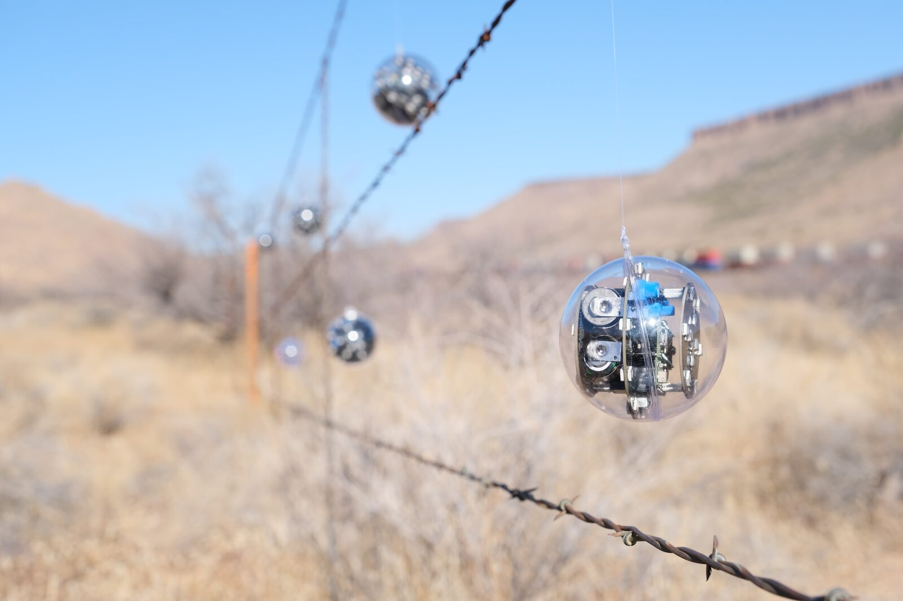
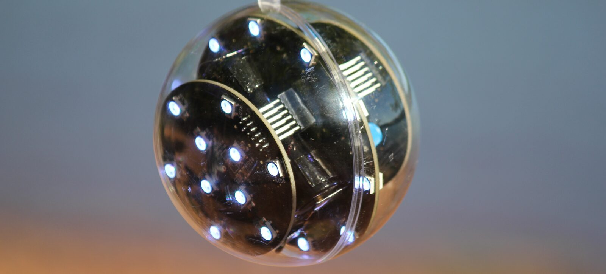
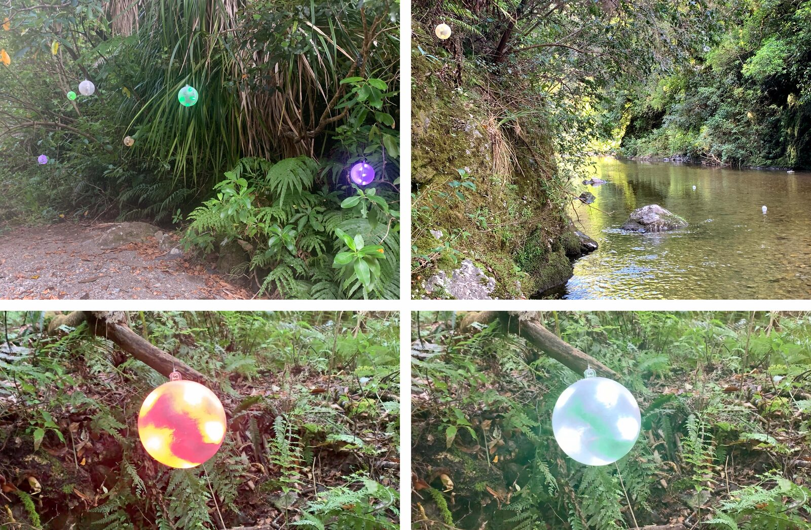
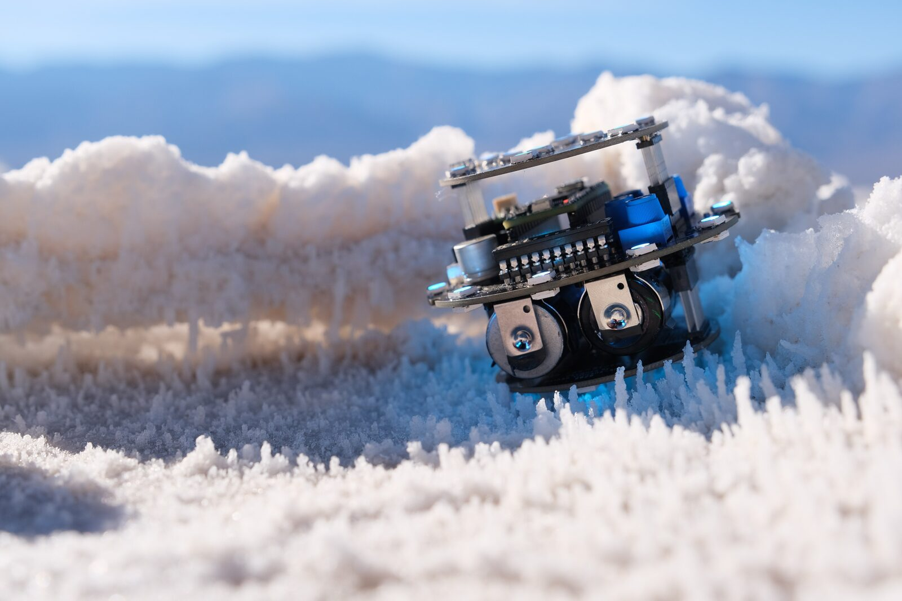
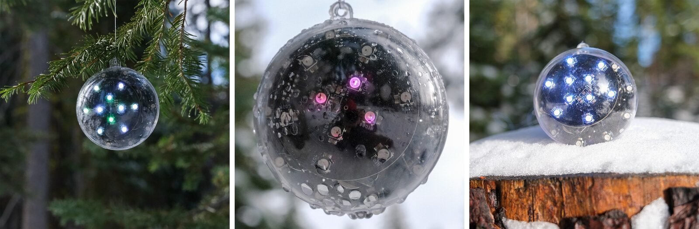
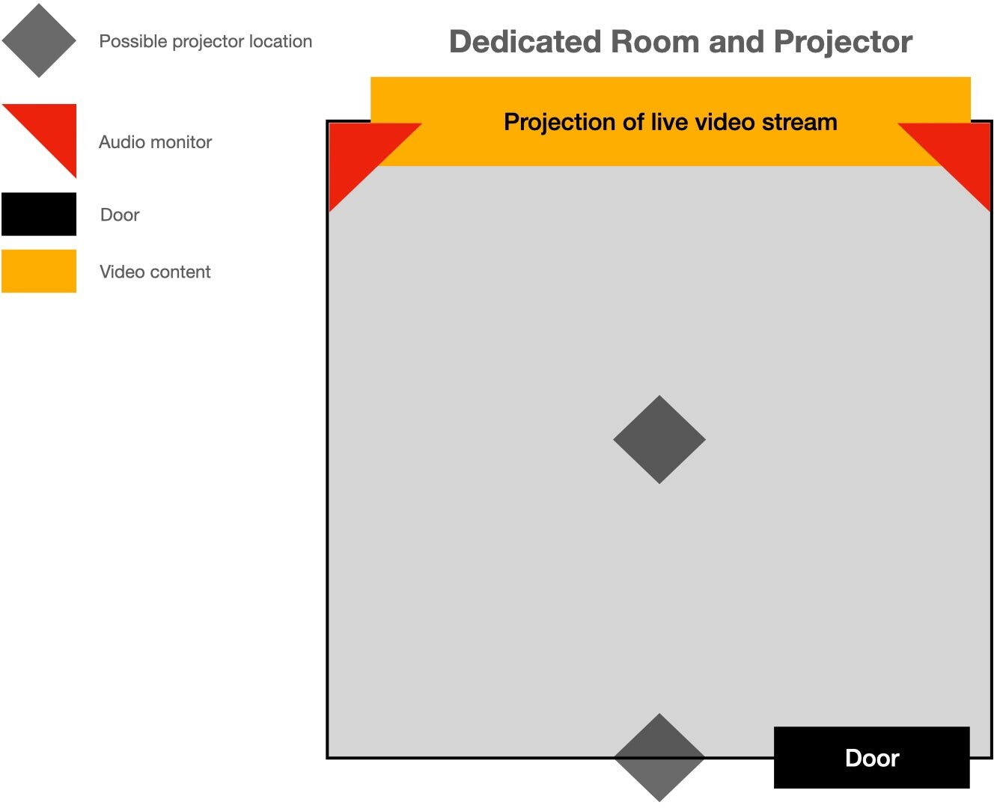
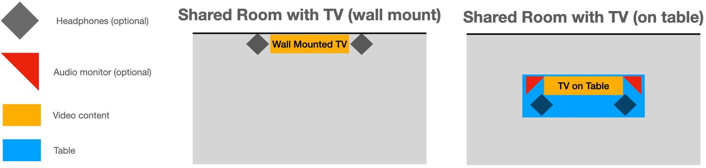

Eunomos: visually augmented naturalsoundscapes
Abstract
Eunomos is an audio-reactive sonic art installations which features a traveling group of "electronic creatures" called Speculātors. The Speculātors are placed within a natural environment where they react using illuminated visual feedback according to environmental conditions.
Project Description


Speculātors installed off Route 66 in Northern Arizona.
The majority of sonic artworks present sounds produced by the artist as the primary sonic and artistic subject of the work. The Eunomos installation takes a different approach by offering the in-situ sonic environment, in its sonically unaltered form, as the artistic subject. The installation consists of the placement of a multitude of independent, environmentally aware electronic artifacts, which provide illuminated visual feedback through the actuation of RGB LEDs based on the unique sonic perspective each unit develops throughout the installation period. For NIME, the artist proposes to edit video documentation of the Eunomos pop-up installations conducted in multiple countries to form a reel for each day of the conference to be played on repeat with the accompanying audio recordings.


Close-up of Speculātor unit as installed near Scotts Flat Lake, California.
When exhibited in-situ, the Eunomos installation is facilitated by Speculātors electronic creatures (see accompanying images). In the installations, Speculātors are suspended from features in the environment fully exposed to environmental conditions — juxtaposing the electronic with the natural. The placement of Speculātors, along with their exposed clear acrylic visual aesthetic, hints at both the fragility of the soundscape they are augmenting and their vulnerability to natural forces. Through real-time feedback concerning the amplitude and spectral content of the soundscape from different physical perspectives, the Eunomos installation provides a unique, holistic view of the sonic environment where viewers can simultaneously perceive several sonic perspectives through feedback provided by the Speculātor electronic creatures.
Installation Description


Speculātors installed in Kaitoke Regional Park, New Zealand in late 2019.
This installation proposal takes place on two levels. The first is the in-situ installations conducted before the conference, while the second is the exhibition of the in-situ documentation at the conference. This section will first cover the in-situ installations and the documentation gathering process before discussing the conference exhibition strategy.
For the in-situ installations, the work's subject is the sonic environment present at the time of installation, not the non-intrusive soundscape augmentations provided by the Speculātor devices. The feedback provided by the Speculātors, presented in the form of RGB LED lighting, highlights music-like components in the sonic environment to focus the attention of visitors on the sounds present. This approach effectively uses the Speculātors as tools, or attention conduits, to serve the soundscape through their visual augmentations.


Speculātor unit without enclosure installed at Badwater Basin, Death Valley, California.
The Speculātor artifacts are independent units that develop a unique perspective of the sonic environment due to their location in space and their analysis (or interpretation) of the soundscape. Through this process, units respond primarily to the sounds they perceive as most salient (determined by the relative loudness and spectral content of sounds)— in opposition to a coordinated feedback approach where all units utilize a single input source that only provides a single sonic perspective.


Speculātors installed near Donner Pass, California.
To mine for sonic content of interest, the Speculātors use an auto-calibration routine that adjusts the brightness and color range of its visual augmentations according to the features present in the sonic environment. Through this process, the units mirror changes in the soundscape's relative spectral and amplitude content to provide feedback tailored to the soundscape's peculiarities.
The work is installed following a soundscape-specific exhibition methodology where the installation location is chosen at the time of install based on the location's sonic qualities. One usual downside to this ad-hoc pop-up installation methodology is that few people can experience the artwork apart from the artist for most exhibits. Due to this concern, most installations conducted to date have been documented by the facilitator for digital distribution. This NIME exhibition proposal provides an installation format that allows people to experience the work without physically being present at the initial time of installation while maintaining the spirit of the work, which focuses on natural soundscapes (as opposed to urban or rural soundscapes).
For each day of the conference, the artist will provide a video reel edited together from documentation collected from Eunomos pop-up exhibits that take place in a particular region. The reel is to be played on repeat for the day, to be replaced on the next day with a new reel featuring installations from a new region. The footage will include a combination of the Speculātor units installed in-situ and components of the installation and uninstallation process to best capture the entire exhibition experience. The footage is proposed to be projected within a dedicated room accompanied by audio enforcement to allow NIME physical participants to experience the Eunomos installation without attending an in-situ exhibit physically. If a dedicated room with a projector and sound reinforcement is not available for the work, an alternative scaled-back "shared-room" approach is also provided as an alternative.
Installation Requirements
SPACE REQUIREMENTS
The remote exhibition of Eunomos requires a dedicated room (of any size) where the installation’s live stream can be shown. Alternatively, if space and resource requirements dictate a smaller exhibition footprint, the installation can also be exhibited by using a video monitor and headphones (taking up approximately 2x3 meters). While the artist prefers the larger-scale, full-room exhibition, both approaches are viable for the installation. If accepted, it is entirely up to NIME curators which format better serves the conference.


Diagram showing the preferred arrangement for exhibition in a dedicated room.


Diagram showing arrangement options for exhibition in a shared room.
LOGISTICAL REQUIREMENTS AND FEASIBILITY
Given the vast range of possible logistical complications that could arise if the Eunomos installation is exhibited in-situ at NIME due to the current global pandemic, this documentation-based proposal is crafted with feasibility as a primary concern. Due to the current global pandemic, an in-situ pop-up exhibition methodology (which is the typical strategy for this installation) is not proposed over concerns regarding the ability to safely conduct the installation in an urban environment and the artist's ability to attend the conference if travel restrictions are enacted at the time of the conference.
For the installation as proposed, the primary logistical consideration is coordinating the obtainment, physical setup, and testing of the hardware required for the installation, including the projectors, computer, cabling, etc. While these tasks are typically strait-forward, if the artist cannot attend the conference due to unforeseen circumstances, it will be difficult for him to remedy technical problems and provide guidance to conference facilitators personally. The artist will provide a video file on each conference day to be looped throughout the day. While the artist will provide the file well before the conference, the appropriate file for each day needs to be selected and played on repeat by a facilitator at the start of each day. The system needs to be shut down after the day's events are concluded — a task which will have to be carried out by conference facilitators if the artist is unable to attend (though he most definitely is planning on attending).
EQUIPMENT REQUIREMENTS
The dedicated-room exhibition requires the following equipment:
Table I. Equipment Requirements (Dedicated-Room) | Provided By | Notes |
|---|---|---|
video projector | Organization | 1080p minimum resolution, 4k is preferred as source footage is 4k, HDMI cable and power cable also required |
computer capable of audio and video playback | Organization | along with mouse, keyboard, and all needed power cables |
two loudspeakers | Organization | preferably 40 watts per channel with flat frequency response between 200 Hz and 16 kHz, need a power cable for each loudspeaker |
audio interface capable of driving loudspeakers from computer | Organization | 2x cables for connecting audio monitors to an audio interface, 1x USB cable to connect the interface to the computer |
If exhibited using the smaller-scale approach, the installation will require the following equipment:
Table II. Equipment Requirements (Shared-Room) | Provided By | Notes |
|---|---|---|
television or computer monitor | Organization | 27” minimum size (larger is better), 1080p minimum resolution (4k is preferred as source footage is 4k), mounted onto wall, or placed on a table with black-cloth, HDMI cable, and power cable also required |
black table-cloth or wall mounting | Organization | depending on which method is utilized |
computer capable of audio and video playback | Organization | along with a mouse, keyboard, and all needed power cables |
Headphones or Loudspeakers | Organization | two pairs of headphones or stereo monitors depending on exhibition method (flat frequency response between 200 - 16,000 HZ required) |
audio interface capable of driving headphones or loudspeakers from computer | Organization | 2x cables for connecting audio monitors to an audio interface, 1x USB cable to connect the interface to the computer |
Media
The Eunomos installations have been intermittently conducted since late 2019, with initial exhibits targeting the vocalizations of a species of cicada endemic to New Zealand. While Eunomos has not been exhibited as proposed in this document previously, to help readers develop an understanding of some of the source footage which will be used to create the final product, examples of documentation collected from over twenty in-situ installations (some of which will likely be used while editing together to construct the installation’s video reels) can be found in the links and embedded content found below.
Speculātor Videos Documentation (YouTube playlist) - shorturl.at/abtM8
Speculātor Video/Image documentation (Google Photos) - shorturl.at/bnxNP
Compliance with Ethical Standards
This work has been conducted without harm done to any humans or animals. The work contained in this document is joining funded by the Author and Victoria University of Wellington.